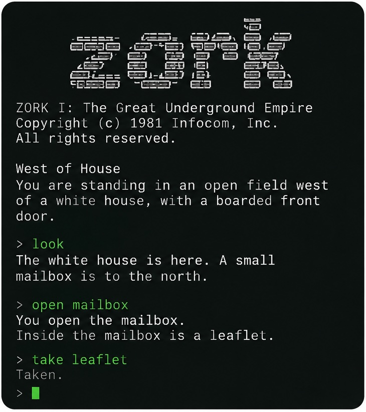
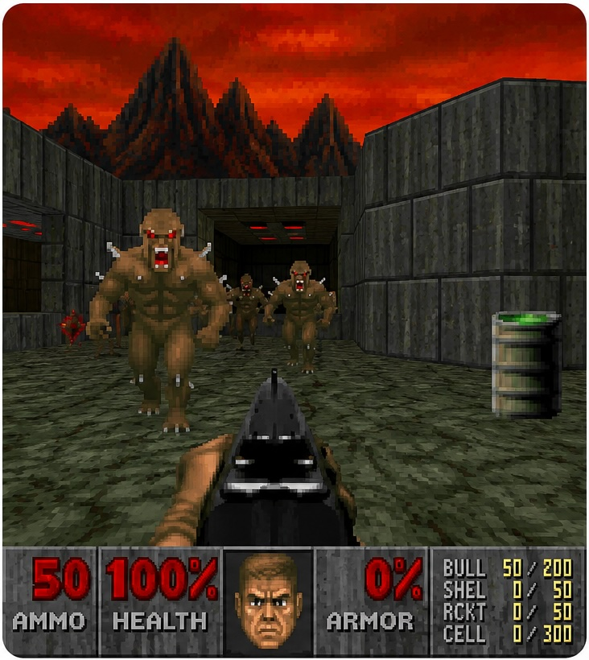

I have worked on AI agents in game environments, spanning text adventure games and visually rich video games. These projects explore reinforcement learning, planning, reasoning, exploration, generalization, morality, and safe decision making.

Research on language-based game agents, from deep reinforcement learning and generalization to moral decision making, LLM reasoning, and planning.
Zijing Shi, Meng Fang, Ling Chen
ICLR 2025 · Project
Meng Fang*, Shilong Deng*, Yudi Zhang*, Zijing Shi, Ling Chen, Mykola Pechenizkiy, Jun Wang
AAAI 2024 · Code
Zijing Shi, Meng Fang, Ling Chen, Yali Du, Jun Wang
AAAI 2024: Safe, Robut, and Responsible AI (SRRAI)
Dongwon Kelvin Ryu, Meng Fang, Shirui Pan, Gholamreza Haffari, Ehsan Shareghi
CoNLL 2023 · Code
Zijing Shi*, Meng Fang*, Yunqiu Xu, Ling Chen, Yali Du
ICLR 2023
Zijing Shi, Yunqiu Xu, Meng Fang, Ling Chen
EACL 2023
Yunqiu Xu, Meng Fang, Ling Chen, Yali Du, Joey Tianyi Zhou, Chengqi Zhang
ACL 2022 · Code
Dongwon Kelvin Ryu, Ehsan Shareghi, Meng Fang, Yunqiu Xu, Shirui Pan, Reza Haf
ACL 2022 (Short) · Code
Yunqiu Xu, Meng Fang, Ling Chen, Yali Du, Chengqi Zhang
EMNLP 2021 (Findings) · Code
Yunqiu Xu*, Meng Fang*, Ling Chen, Yali Du, Joey Tianyi Zhou, Chengqi Zhang
NeurIPS 2020 · Code
Yunqiu Xu, Ling Chen, Meng Fang, Yang Wang, Chengqi Zhang
IEEE Conference on Games (CoG) 2020

Research on visual game agents and game benchmarks, including generalization, continual reinforcement learning, and safe reinforcement learning in embodied environments.
Tristan Tomilin, Meng Fang, Mykola Pechenizkiy
ICLR 2025 · Project
Tristan Tomilin, Meng Fang, Yudi Zhang, Mykola Pechenizkiy
NeurIPS 2023
Tristan Tomilin, Tianhong Dai, Meng Fang, Mykola Pechenizkiy
CoG 2022 · Code